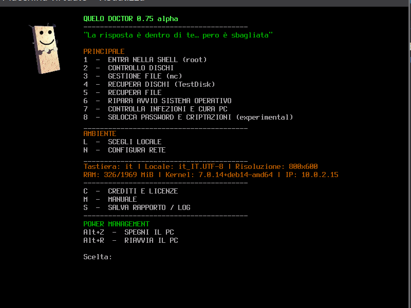

Chiavetta USB e requisiti / USB stick & requirements
Quelo Doctor è pensata per girare da chiavetta USB (o da qualsiasi supporto avviabile): scarichi l'ISO, la copi sul supporto con il metodo che preferisci e avvii il PC da lì.
Preparare la USB / Prepare the USB stick
| Metodo | Note |
|---|---|
| Ventoy | Copi il file .iso sulla chiavetta già preparata — niente riscrittura ogni volta / copy the ISO file, no full reflash each time |
dd |
Scrittura raw su Linux: dd if=quelo-doctor-….iso of=/dev/sdX bs=4M status=progress |
| Rufus / balenaEtcher | GUI su Windows, macOS o Linux — selezioni ISO e dispositivo USB / pick ISO and USB device |
| Altri tool | Qualsiasi programma che scrive correttamente un'ISO avviabile (UEFI e/o BIOS) / any tool that writes a bootable ISO correctly |
Avvio / Boot: inserisci la USB, accendi il PC, apri il menu boot (F12, F8, Esc…) e scegli la chiavetta. Supporta UEFI e Legacy BIOS.
Guida completa USB / Full USB guide
— Ventoy, dd, Rufus, balenaEtcher, GNOME Disks, USBImager, Win32 Disk Imager e altri.
Requisiti minimi del PC / Minimum PC specs
Nessun desktop grafico — solo console testuale. Con il menu principale attivo la RAM resta sotto 1 GB; adatta anche a PC datati o con poca memoria.
| Componente | Minimo | Consigliato |
|---|---|---|
| Architettura | x86_64 (amd64) | — |
| RAM | 512 MB (menu e shell) | 2 GB per scan antivirus (menu 7) o recupero su dischi grandi |
| Uso tipico menu | ~300–800 MB a idle | — |
| Processore | CPU 64 bit amd64 (anche single-core) | Dual-core+ per ClamAV, TestDisk, operazioni lunghe |
| Chiavetta USB | 2 GB (ISO ~1 GB) | 4 GB+ |
| Schermo | Console testuale / framebuffer, no GPU dedicata | — |
| Rete | Opzionale (menu N); firmware non-free inclusi per LAN, Wi‑Fi e mobile broadband | Utile per aggiornare firme AV prima dello scan |
| Boot | UEFI o Legacy BIOS | — |
Menu 7 (ClamAV + YARA) e lavori su volumi molto grandi possono richiedere più RAM e CPU. Su PC con 512 MB restano comodi diagnostica dischi, shell, Midnight Commander e ripristino avvio.

Download
| File | Descrizione / Description |
|---|---|
| quelo-doctor-0.75-alpha.iso | Ultima ISO verificata (~996 MB) / Latest verified ISO |
| SORGENTI/ | Sorgenti per build e personalizzazione / Build sources |
L'ISO non è nel repository git (limite 100 MB di GitHub). Scaricala dalle Releases.
The ISO is not in the git tree (GitHub 100 MB limit). Download from Releases.
Vedi USB e requisiti per preparazione chiavetta e hardware minimo.
Scarica ISO / Download ISOItaliano
Cos'è Quelo Doctor
Quelo Doctor è una distribuzione live pensata per tecnici e utenti avanzati che devono salvare un PC in emergenza: dischi che non bootano, file cancellati, sospetta infezione, password dimenticate, avvio Windows/Linux rotto.
Niente desktop, niente browser: solo un menu testuale rapido su TTY, ispirato al personaggio Quelo di Corrado Guzzanti (crediti in menu C).
Perché queste scelte
| Scelta | Motivo |
|---|---|
| Menu testuale, no GUI | Funziona su quasi tutto l'hardware, anche con GPU/driver problematici; meno RAM, avvio più prevedibile |
| Debian sid + live-build | Base solida, pacchetti aggiornati, toolchain standard per ISO live |
| Un tool per voce di menu | Flusso guidato: non devi cercare quale programma lanciare (TestDisk, mc, ClamAV…) |
| Automount USB in /media | Chiavette e dischi USB compaiono subito, pronti per salvare report e log |
| Documentazione stile man | Crediti, licenze e manuale (C/M) usano man-db + groff + less: scroll affidabile su console |
| Tasto Q uniforme | Indietro/uscita uguale ovunque (sottomenu e testi), come nei pager standard Linux |
| Firmware non-free | Inclusi (sezione non-free-firmware Debian) per coprire LAN, Wi‑Fi e mobile broadband (modem USB/4G via ModemManager) |
| Solo amd64 | Copre i PC reali in campo; build più snella |
Menu principale
PRINCIPALE
AMBIENTE — L lingua/tastiera · N rete
INFO — C crediti e licenze · M manuale · S salva rapporto/log su USB
POWER — Alt+Z spegni · Alt+R riavvia
Software principale incluso
TestDisk/PhotoRec, Midnight Commander, ClamAV, YARA, GRUB, ntfs-3g, NetworkManager, ModemManager, smartmontools, cryptsetup/dislocker, firmware non-free per LAN/Wi‑Fi/mobile broadband, e componenti Debian in menu C / Licenze.
Come funziona (in breve)
- Boot da USB → logo e menu verde/ambra
- Un tasto per scegliere la voce
- Q per tornare indietro
- I report (menu S e log scan menu 7) si salvano su supporti esterni con permessi leggibili da desktop (
644, utente1000)
English
What is Quelo Doctor
Quelo Doctor is a live rescue ISO for technicians and power users: broken boot, deleted files, malware checks, password recovery, Windows/Linux boot repair.
No desktop, no web browser: a fast text menu on the Linux console, named after the Quelo character by Corrado Guzzanti (see menu C for credits).
Why we built it this way
| Choice | Reason |
|---|---|
| Text menu, no GUI | Works on difficult hardware; lower RAM use; predictable boot |
| Debian sid + live-build | Solid base, current packages, standard live ISO tooling |
| One guided tool per menu item | No guessing which app to run (TestDisk, mc, ClamAV…) |
| USB automount under /media | External drives ready for reports and logs |
| man-style docs | Credits, licenses, manual (C/M) via man-db + groff + less |
| Uniform Q key | Back/exit everywhere, consistent with standard Linux pagers |
| Non-free firmware | Included (Debian non-free-firmware) for Ethernet (LAN), Wi‑Fi and mobile broadband (USB modems/4G via ModemManager) |
| amd64 only | Matches real-world hardware; leaner build |
Main menu
Same layout as the Italian section. Menu L switches locale (Italian/English).
Build dalla sorgente / Rebuild your own
Requisiti / Requirements: Debian o Ubuntu, sudo, live-build, debootstrap, ~15 GB spazio.
git clone https://github.com/alby-quelo/quelo-doctor.git
cd quelo-doctor/SORGENTI
sudo ./build.sh
L'ISO finisce in ../ISO/quelo-doctor-X.XX-alpha.iso. Versione corrente in SORGENTI/VERSION.
Personalizza:
SORGENTI/overlay/— script, config, testiSORGENTI/packages/extra.list.chroot— pacchetti aggiuntiviSORGENTI/hooks/— hook live-build
Struttura repository
quelo-doctor/ ├── README.md ← documentazione (anche su GitHub) ├── docs/ ← questa pagina (GitHub Pages) ├── images/ ← screenshot e mascotte ├── SORGENTI/ ← sorgenti build └── ISO/ ← solo locale — su GitHub usa ReleasesApri repository / Open repository
Segnalare problemi / Report issues
Hai trovato un bug? Apri una issue con:
- versione ISO (es. 0.75)
- passi per riprodurre
- hardware (UEFI/BIOS, dischi)
- comportamento atteso vs osservato
Found a bug? Open an issue with the same details.
Apri issue / Open issueAvvertenza / Disclaimer
Avvertenza. Quelo Doctor è distribuito «così com'è», senza garanzie di alcun tipo, espresse o implicite. È realizzato a scopo didattico e sperimentale: non sostituisce l'assistenza professionale né garantisce il recupero dei dati o l'esito delle operazioni su dischi, sistemi o reti. L'uso è a proprio rischio; gli autori non rispondono di danni diretti o indiretti derivanti dall'uso dell'ISO o delle istruzioni pubblicate.
Disclaimer. Quelo Doctor is provided «as is», without warranty of any kind, express or implied. It is intended for educational and experimental purposes only: it does not replace professional support and does not guarantee data recovery or the outcome of any disk, system, or network operation. Use at your own risk; the authors are not liable for any direct or indirect damage arising from the use of the ISO or the published instructions.
Licenze / Licenses
- Quelo Doctor (menu, script, overlay): CC BY-NC 4.0
- Software di terze parti: GPL, Apache, ecc. — elenco completo in ISO menu C → Licenze